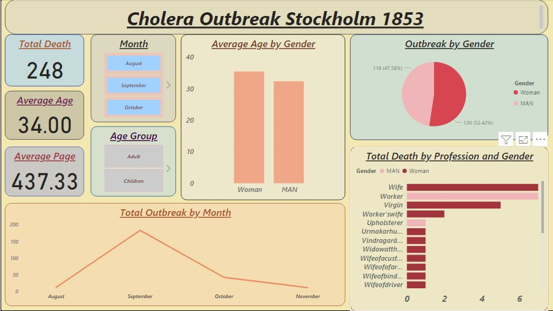

November 7, 2022
A tech-savvy skilled in collecting, cleaning, transforming and organizing data for investigation to make data-driven decisions for businesses, using tools like PowerBI, Excel, Tableau and SQL for effective data analysis and exploration.

This is a Brazilian eCommerce public dataset of orders made at Olist Store. The dataset
has information of 100k orders from 2016 to 2018 made at multiple marketplaces in Brazil.
This visualization is a 3years sales of products on a Brazillian E-commerce site focusing on the Total number of orders that was made by customers, Total number of customers and other insightful visuals.

This is a visualization story that compares the stock prices of Top 10 Companies (Apple,
Amazon, Netflix, Microsoft, Google, Facebook, Tesla, Walmart, Uber and Zoom) from 2015 to 2021.

This is an interactive Excel sales analysis dashboard of 4 states in the United State of America. The analysis gives a comprehensive breakdown of Total revenue,
Total quantity of product sold, Average revenue, Total customer, Total sales person, Top 10 customers by revenue, Sales trends and other constructive insights to make a data-driven decisions.

This dashboard represent the restuarants ratings for 4 different cities in Mexico for the year 2021.
This visualization explains;
Number of restaurants in each city,
Overall ratings by city,
Preferred Cuisines by different customers,
Ratings of restaurants by cuisines.

This is a PowerBI Visuals of New York City Taxi Trips for years 2019 and 2020. This data presentation gives a brief of the Average fare rate by months through the years and further breakdown was done to discover the Congestion and Improvement Surcharge rates through January to December for each year.

This data is part of research work on the history of Stockholm in the 19th century.
The data is collected from hand-written church records. The church was responsible for all population registration until around 1870.
This visual illustrates the speed of a cholera pandemic in the environment and the traumatic effect on individuals (Different age groups, Genders, Professionals, etc).

This visualization explores a flight data of different Airlines in a certain airport.
It illustrates the average airtime for different airlines, their avarage cancelled flight including the average/total delay and arrival time.

This data ia about Shark attacks that was reported over the past 100 years, including location, activity, victim info (Gender, Age-Range, etc) and Shark Species.
This Visualization explains the countries report the most shark attacks, the areas which the attacks occured and locations seem to be the most dangerous.
It also explores what body parts are most often injured, certain parts of the day in which the shark attacks and the species that attacks the most.

This COVID 19 data was collated by the Nigeria Centre for Disease Control (NCDC).
This data includes all 36 states in the Replublic of Nigeria affected by the COVID 19 pandemic.
Whilst exploring the raw data, I was able to derive some insighful KPI's which includes but not limited to: Number of Lab cases, Admitted cases, Discharged cases and Death cases for each states.

This visualization is a 3years Analysis of Covid-19 outbreak in the world. This datasets was extracted from the World Health Organization database (WHO) for the year 2020 to 2022.

This Visualization explores a bitcoin dataset from 2011 to 2021.
The insights derived from this dataset include: Total volume currency by month
Average BTC volume by year
Total BTC volume by month
Average weighted price by days
Minimum low price
Maximum low price
Minimum High price
Maximum High price
Average open price, and
Average close price

This is a Geospatial Visualization of Covid 19 Impact on Airport Traffic for 4 countries (Australia, Canada, Chile & United State of America).
This dataset shows traffic to and from the Airport as a Percentage of the Traffic volume during the baseline period. The baseline period used for computing this metric is from 1st Feb to 15th
March 2020.

This dataset is a collection of key metrics maintained by 'Our World in Data'. It is updated regularly and includes
data on energy consumption (primary energy, per capita, and growth rates), energy mix, electricity mix, and
other relevant metrics.
This Dataset entails all form of energy generation sources but focused my analysis on the most used energy sources worldwide (Solar, Electricity and Gas).
I used Tableau as my visualization tool for this project because this data is more of a geographical focused data.